Hi! I am Sam。
I love biking and enjoying beautiful mountains and forests; I love logical thinking, history and programming; I love films and paintings, which teach me what truth and beauty are.
I love biking and enjoying beautiful mountains and forests; I love logical thinking, history and programming; I love films and paintings, which teach me what truth and beauty are.
P.S. I wrote this personal website with JavaScript, HTML, and CSS.

Profile
Name：Pei-Shan Hsieh (Sam)Birth：1986
Gender：Female
Email：peishsieh@gmail.com
Education
B.A. in History, National Taiwan Normal University, Taiwan, 2009
Professional Experience
o NTU aCARE Project
o NTU Hope Project
o NTU Academic Counseling System
o NTU Learning Community
Research Assistant／Institute of Modern History, Academia Sinica
o NTU Hope Project
o NTU Academic Counseling System
o NTU Learning Community
o Modern History Database
o Project: Modern Historical Documents Full-Text Database,
o Project: Modern Historical Documents Full-Text Database,
Skills and Competencies
Github: mhciga


2017 My Mini Field Project
I launched the project, a six-month plan encouraging students to discuss,
interview and report on important social issues.
I led twenty students to write on diverse topics including
gender issues, minorities, and land and social justice.
The reports were published on a well-known online media platform in Taiwan
and were shared over 500 times on Facebook.
In the end, the twenty students and I collaborated to hold a fantastic exhibition of reports,
attracting more than 5,000 people to visit.


2016 NTU Forum：Learning How to Learn／Barbara Oakley
Dr. Barbara Oakley, Professor of Engineering at Oakland University in Rochester, Michigan.
Her "Learning How to Learn" has been one of the most popular courses on Coursera,
focusing on the complex relationship between neuroscience and social behavior.
She came to give a speech in 2016, that attracted more than 400 attendees.
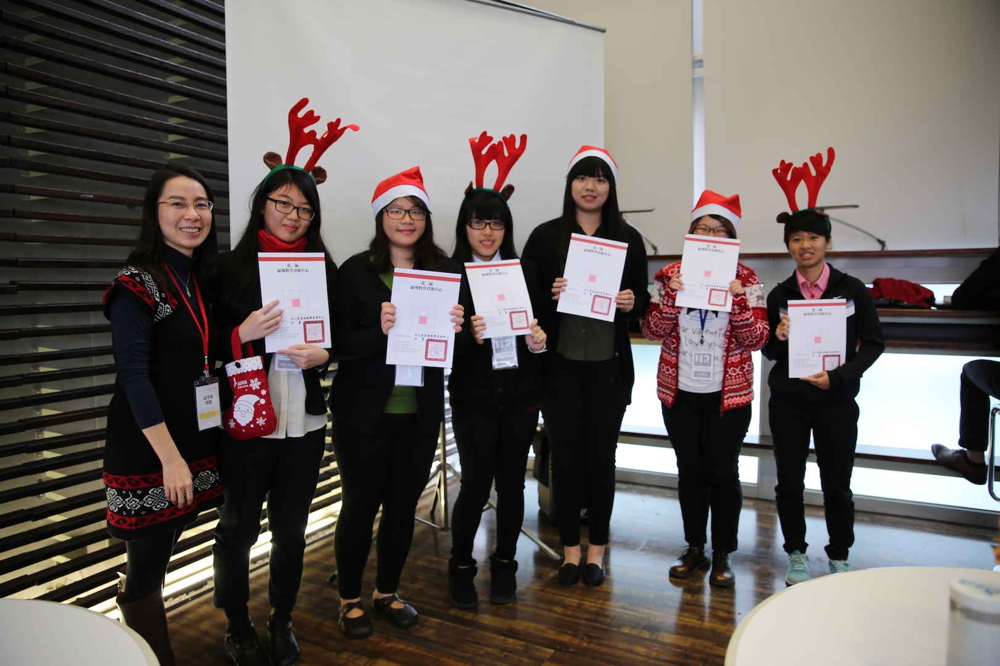
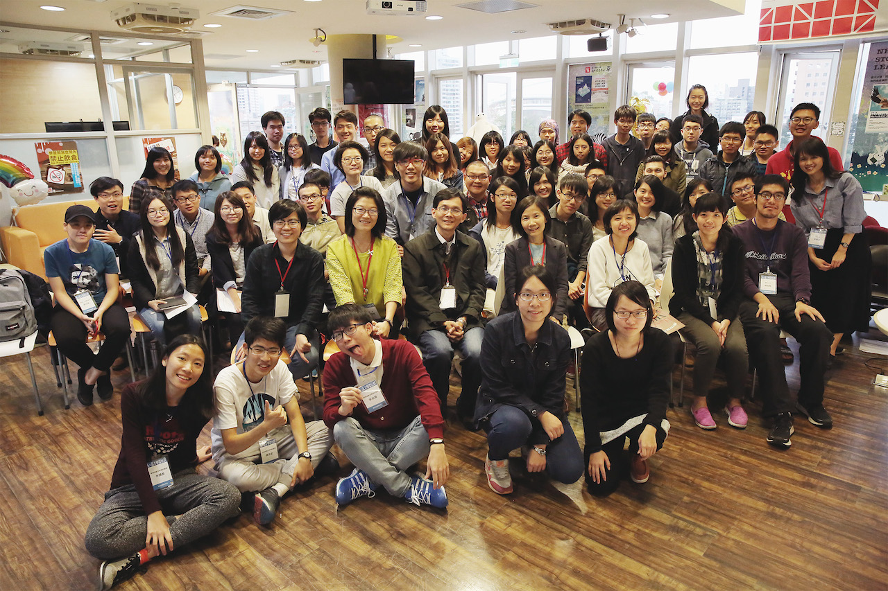
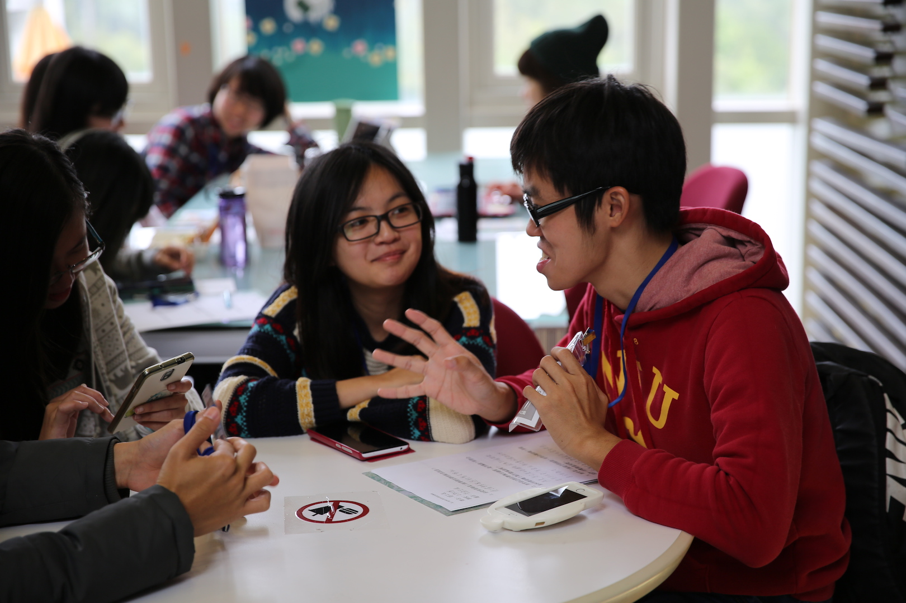
2015 - 2017 Student Study Group and Learning Project
I have Supervised 71 cases of student learning project,
and coordinated study groups for 400 students across 14 schools.
I was also the general coordinator of three
orientation camps for disadvantaged students.
It is really exciting to see students making an effort to achieve their goals.


2016 My New Learning Companies：Online Media
Digital learning has been a popular issue in recent years.
We invited passionate YouTubers in Taiwan, RD English, Taiwan Bar,Pan Sci, and Story Studio,
to share how to launch a YouTube chnannel and how to maintain its success.
 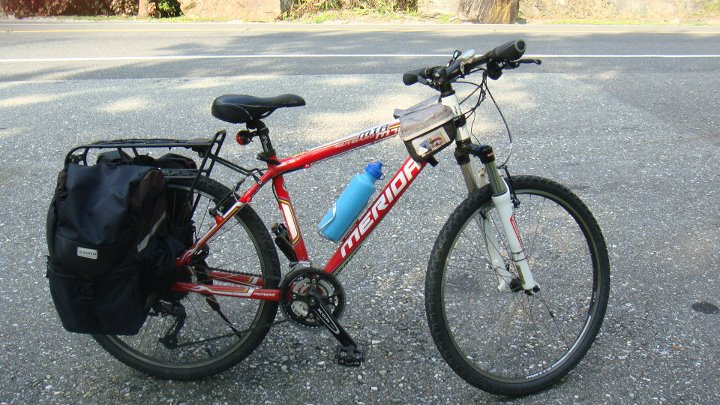
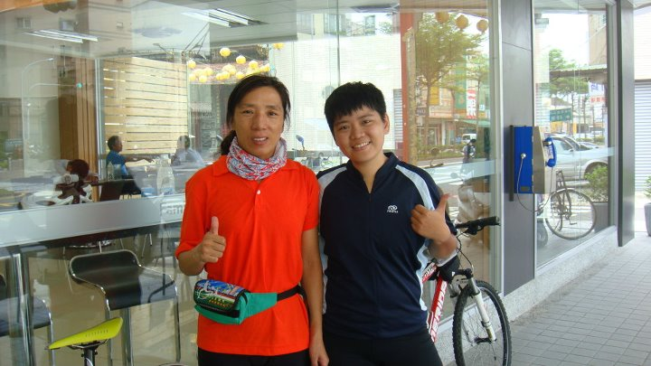
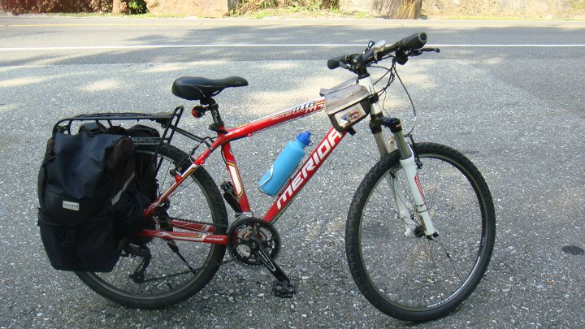
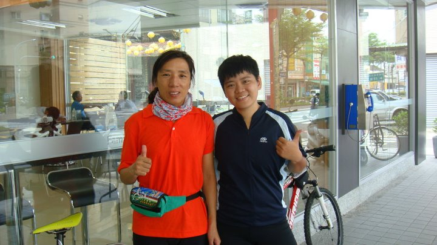
Bicycle Touring
I am passionate about bicycle tourism, and it is the best way to travel the world.
I have spent 11 days on a bicycle tour in my home country, 1100 KM on the island of Taiwan.
The journey allowed me to see the life, people, culture and history of the island.
I also know who I am through this journey.
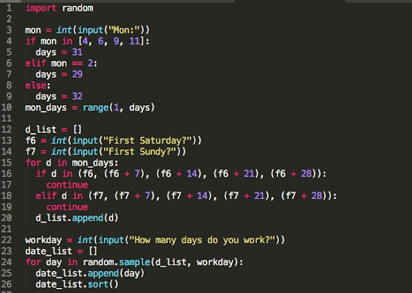


Programming
Learning programming has changed the way I think about things,
with too many unnecessary details to be considered,
but now I can think in a straightforward and logical way.
 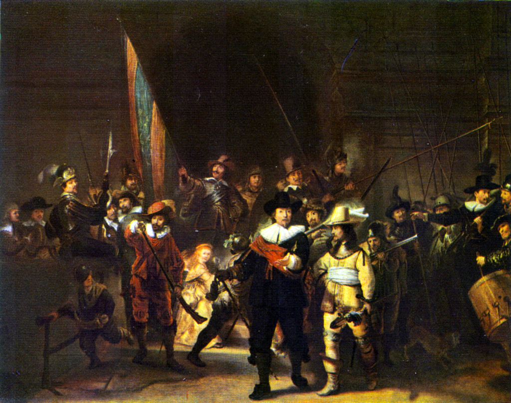
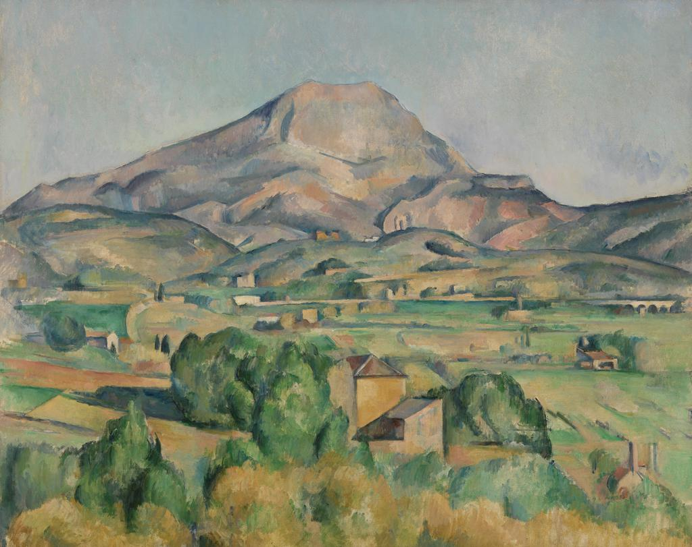
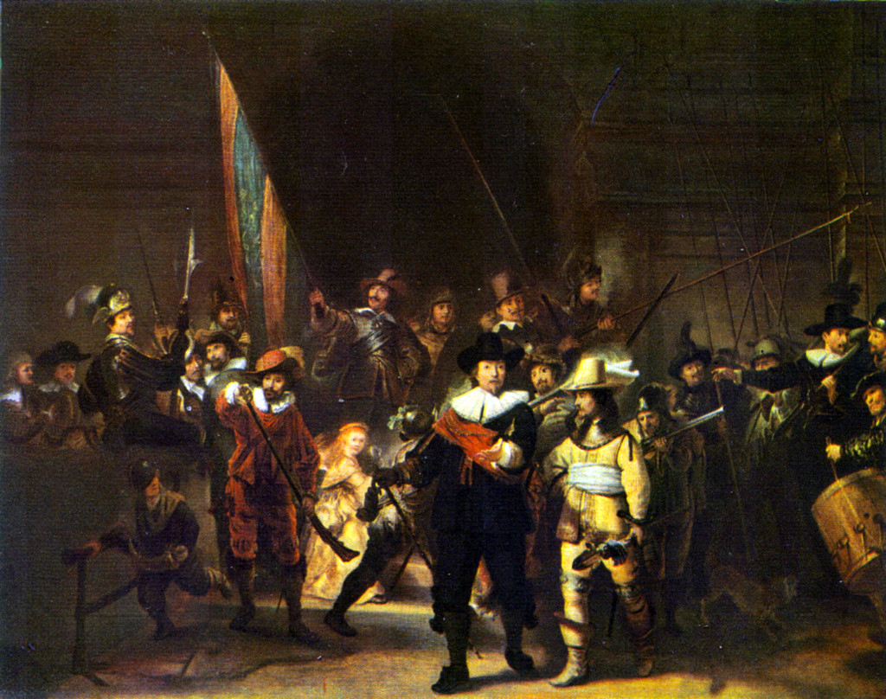
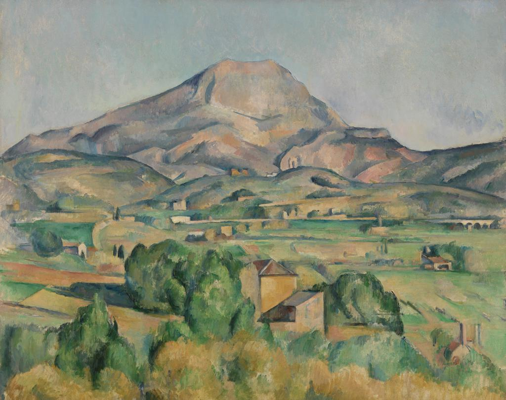
Art History
I am a history graduate, and Art History is one of my favorite fields,
especially Art History in Modern Europe.
The history shows the deep connections between society, science, religion and culture
which I find very attractive.
Please click the pictures to see：
Édouard Manet- "A Bar at the Folies Bergere"
Rembrandt Harmenszoon van Rijn- "De Nachtwacht"
Paul Cézanne- "Mont Sainte-Victoire"
(Click to see the introduction)
The blog records my learning process of programming,
including resources collecting and my personal comments.
(Click to see the introduction)
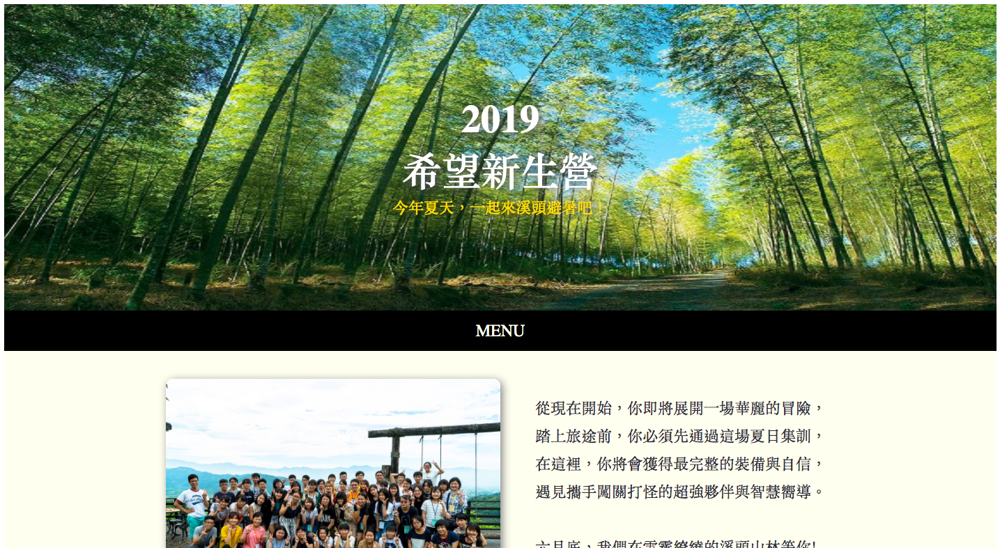
I wrote an activity website by using JavaScript, HTML& CSS.
(Click to see the introduction)
Using Python to scrap the data on a film website.
(Click to see the introduction)

I wrote this auto-generaotor after one month since I started to learn Python.
It helps me to reduce a lot of calculation of part-time hours at my work.